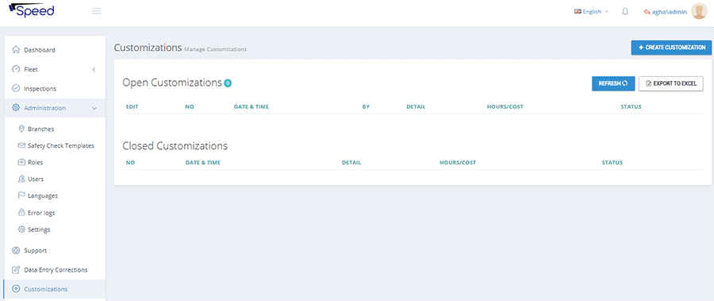

Customizations
The customization module allows you to request particular customization in the system. Though the Speed – UK Vehicle Safety Check System (SCS) is efficient enough to fulfill all your needs, yet you can go for customizations. Our technical team will communicate and coordinate to bring your idea into life.
